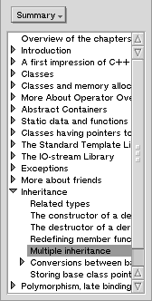
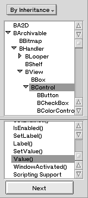

The first thing you need to do is to open a book. To do this, go in the 'Book' menu and select one of the items. The book introduction or summary appears in the window, and on the left you'll see BeHappy's controls. Here are the controls for the BeBook:
The top popup menu lets you choose the index you want to use. With the BeBook, you have four indexes:
| Single list Just select an item in the list. |
Double list Select an item in the upper list, and more details appear in the lower list. Select an item in the lower list to display the corresponding text in the window. |
List with search Type something in the bottom box, and the list shows every item that starts with what you typed. |
"Contains" option With this option selected, every item that contains what you typed is displayed in the list. |
|  |  |  |
 |
| Sometimes you'll see a 'Next' button. It tries and find if the item you selected in the upper list exists somewhere else. It is very useful in the 'By Inheritance' index in the BeBook, with classes that use multiple inheritance. |